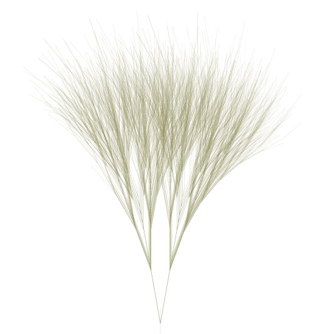
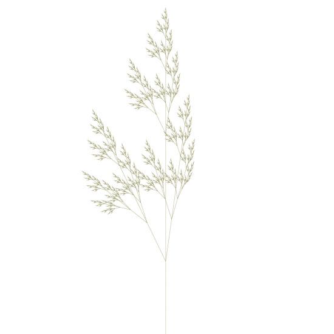
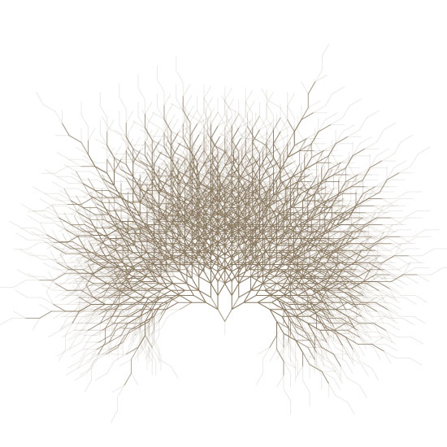
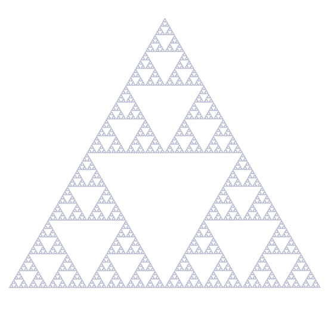
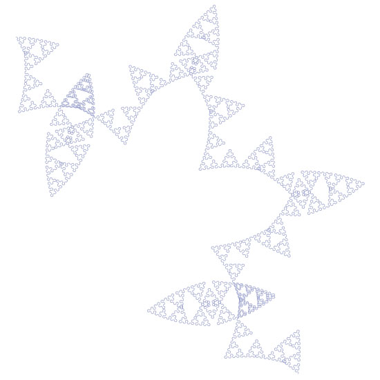
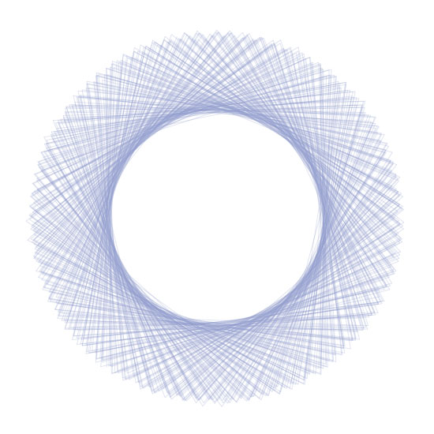

Mark Meyer has created an L-system algorithm in PlotDevice. An L-system or Lindenmayer system is a set of rules and symbols used to model the growth processes of plant development - you may remember it from Dryad. L-systems are based on recursion - a programming principle in which parts of the whole involve invoking the whole again (e.g. a branch of a tree is a small tree in itself, etc.) Mark has shared his code with us so now we can all experiment with L-systems!
You may also want to check out some of Mark’s beautiful photography on his website.

Here are the rules used to create the output. The rule system is a simple dictionary - it
should be pretty self explanatory. For a rule like: X -> F[+X][-X]FX just add a entry
to the rules dictionary like rules[’X’] = ’F[+X][-X]FX’. The letters represent other
rules so in the above rule we need to make sure there is also a rule defined for F or we get a
key error.
This one uses a scale factor with each iteration of .95--it’s in the code but commented
out.
segmentLength = 195
angles: 10, -10
begin -> A
A -> A[-B][+B]
B -> A[-B]A[+A]
iterations: 8

segmentLength = 3
angles: 25.7 -8
begin -> X
X -> F[+X][-X]FX
F -> FF
iterations: 8

segmentLength = 18
angles: 30, -30
begin -> A
A -> A[-B][+B]
B -> A[-B]A[+A-B]
iterations: 9

The famous Sierpinksi Triangle.
segmentLength = 1
angles: 60, -60
begin -> A
A -> B+A+B
B -> A-B-A
iterations: 10

Illustrates how a minor change has major effects - same rules but one angle changed by .25
degree.
segmentLength = 3
angles: 60, -60.25
begin -> A
A -> B+A+B
B -> A-B-A
iterations: 8

Single rule, no branching.
segmentLength = 350
angles: 251, 252
begin -> F
F ->F-F+F+F-F
iterations: 5
The source:
# by mark meyer | http://www.photo-mark.com | enjoy.
size(600, 800)
strokewidth(1)
stroke(.45, .45, .25, .35)
nofill()
translate(300, 800) #starting point
segmentLength = 3
rightTurnAngle = 25.7
leftTurnAngle = -25.7
rules= {}
# The symbold for the formal language are:
# [ = save state (i.e push()). ] = restore state (i.e. pop()).
# + and - = turn right and left respectively (based on angles given above)
# Other symbolds are recursively substituted
# and then processed as a draw forward instruction
rules['w'] = 'X' # This is the starting rule
rules['X'] = 'F[+X][-X]FX'
rules['F'] = 'FF'
# Be careful with large numbers of iterations,
# the complexity grows exponentially
iterations = 8
def draw():
beginpath(0, 0)
lineto(0, -segmentLength)
endpath()
transform(mode=CORNER)
translate(0, -segmentLength)
def iterate(n, rule):
if rule == '+':
rotate(rightTurnAngle)
return
elif rule == '-':
rotate(leftTurnAngle)
return
elif rule == "[":
push()
return
elif rule == "]":
pop()
return
if n > 0:
#scale(.98) # scaling on each iteration is fun to play with
for step in rules[rule]:
iterate(n-1, step)
else: draw()
iterate(iterations, 'w')
Created by Mark Meyer